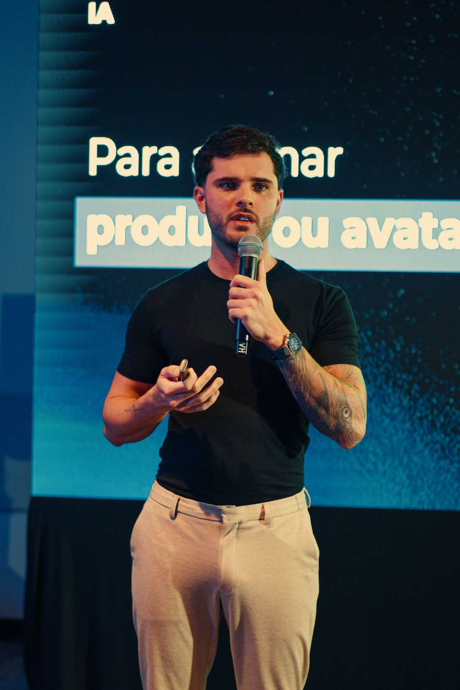

Otimização de conversão no Shopify: as mudanças de página de produto e checkout que mais movem a agulha
Não é cor de botão. É preço final visível cedo, dúvida respondida no lugar da dúvida e menos passos até o pagamento. A ordem de prioridade que eu uso nas lojas que opero.

Otimização de conversão no Shopify é o trabalho de aumentar a porcentagem de visitantes que compram mexendo na página de produto, no carrinho e no checkout — sem aumentar um real de mídia. As mudanças que mais movem a agulha não são estéticas: são mostrar o preço final (produto + frete + prazo) o mais cedo possível, responder a objeção exatamente onde ela nasce e reduzir o número de passos entre o botão de comprar e o pagamento aprovado. Cor de botão e contador regressivo entram depois, e quase sempre valem centavos perto disso.
- Clareza de preço — frete, prazo e parcelamento antes do checkout, não dentro dele.
- Objeção respondida no lugar — troca, tamanho, garantia e prova social na dobra em que a dúvida aparece.
- Menos passos — carteira digital, endereço automático, Pix e zero cadastro obrigatório.
O que é otimização de conversão no Shopify (e o que não é)
Otimização de conversão, ou CRO, é engenharia de decisão. O visitante já chegou — você já pagou por ele. A pergunta é o que impede a compra: falta de informação, desconfiança ou trabalho demais.
O que não é CRO: trocar o tema por um mais bonito e esperar. Instalar oito apps de urgência. Cobrir a página de selos. Tudo isso costuma piorar o que mais importa — velocidade e clareza. Loja lenta e loja confusa perdem venda pelo mesmo motivo: exigem paciência de quem não tem nenhuma.
Na minha agência a regra é chata e funciona: cada mudança precisa ter uma hipótese escrita, um lugar no funil e uma métrica de receita. Se não tem, não entra na fila.
A conta que decide o que otimizar primeiro
Antes de tocar em qualquer coisa, monte o funil da loja com números seus. No Shopify você tem isso nativo em Análises: sessões, sessões que viram carrinho, carrinhos que viram checkout, checkouts que viram pedido.
Um exemplo com números redondos, só para mostrar o raciocínio. Uma loja com 40.000 sessões no mês, ticket médio de R$ 180 e conversão de 1,4% faz 560 pedidos e R$ 100.800. Subir a conversão para 1,8% — meio ponto percentual, coisa que se consegue com clareza de preço e um checkout mais curto — leva a 720 pedidos e R$ 129.600. São quase R$ 29 mil a mais no mesmo mês, com a mesma verba de anúncio.
Agora onde mexer. Se de 40.000 sessões só 3% chegam ao carrinho, o problema é a página de produto. Se 40% dos carrinhos chegam ao checkout e metade morre lá dentro, o problema é frete, meio de pagamento ou atrito de formulário. O funil não é decorativo: ele decide a fila de trabalho.
Otimizar a página errada é o jeito mais caro de trabalhar. Primeiro descubra onde a água vaza, depois escolha a ferramenta.
Página de produto: as mudanças que mais movem a agulha
A página de produto é onde a venda acontece de verdade — o checkout só formaliza. Esta é a ordem que eu sigo.
1. Arrume a primeira dobra no celular
A maior parte do tráfego pago de e-commerce no Brasil chega por celular. Abra sua página em um aparelho comum, sem rolar, e conte quantas das cinco informações abaixo estão visíveis: foto do produto em uso, título que diz o que é e para quem, preço com parcelamento, prazo de entrega e botão de compra. Se faltar mais de uma, é aí que está seu maior ganho — e ele não custa nada.
2. Fotos que respondem perguntas, não que enfeitam
Cada imagem deve ter uma função: escala (produto na mão, no corpo, no ambiente), detalhe (costura, acabamento, textura), uso (como funciona) e comparação (tamanhos, variações). Foto bonita sem função é peso morto — e peso morto atrasa o carregamento. Vale a mesma lógica dos criativos de alta estética que usamos em anúncio: beleza a serviço da mensagem.
3. Frete e prazo estimados antes do checkout
Esta é a mudança isolada que mais vejo dar resultado em loja brasileira. Um campo de CEP na página de produto, mostrando valor e prazo, tira do caminho a maior fonte de abandono. O cliente que descobre o frete só no último passo não desiste da compra: ele desiste de você.
4. Prova social específica, colada na objeção
Nota média no topo, perto do preço. Avaliações com foto na altura da decisão. E, principalmente, avaliações que respondem à dúvida daquele produto — se o seu produto tem dúvida de tamanho, a avaliação que aparece primeiro precisa falar de tamanho. É aqui que o conteúdo gerado pelo usuário rende duas vezes: converte na loja e alimenta o anúncio.
5. Bloco de objeções onde a objeção nasce
Perguntas frequentes no rodapé não são lidas. Coloque a resposta no ponto exato: política de troca ao lado do seletor de tamanho, prazo de entrega ao lado do preço, garantia embaixo do botão. Uma dúvida respondida no lugar certo vale mais do que dez respostas num acordeão que ninguém abre.
6. Variantes que não escondem o que está esgotado
Seletores devem mostrar tudo, com o indisponível marcado — e com aviso de reposição. Variante que some confunde; variante que finge estar disponível e falha no carrinho queima a confiança de vez.
7. Descrição escaneável, com a especificação embaixo
Três a cinco linhas de benefício claro, depois a ficha técnica. Quem compra por impulso lê o começo; quem compra por comparação desce até a tabela. Escreva para os dois, nessa ordem.
8. Botão de compra fixo no mobile
Barra fixa com preço e “Comprar” acompanhando a rolagem. Simples, barato, e resolve o caso comum de quem se convenceu no meio da página e não quer voltar ao topo.
9. Confiança de marca, não selo genérico
Uma loja com identidade consistente converte melhor do que uma loja igual a mil outras — e isso é branding para e-commerce, não decoração. Nome, tom, embalagem, CNPJ e canal de atendimento visíveis fazem mais pela confiança do que qualquer selo de “site seguro” colado no rodapé.
Checkout: onde o carrinho vaza e o que dá para consertar
O Baymard Institute, que estuda usabilidade de e-commerce há mais de uma década, mede a taxa média de abandono de carrinho na casa dos 70% e aponta os custos extras que aparecem só no fim — frete, taxas, acréscimos — como o motivo campeão. Logo atrás vêm exigir criação de conta e checkout longo demais. Ou seja: a maior parte do vazamento é evitável e não depende de programação sofisticada.
O que eu ajusto, na ordem:
- Checkout como convidado sempre disponível. Criar conta é opcional, e a oferta de criar vem depois do pedido, não antes.
- Meios de pagamento locais completos. No Brasil, Pix e cartão com parcelamento claro. Parcelamento escondido é preço escondido.
- Carteiras digitais ativadas. Shop Pay, Apple Pay, Google Pay e afins existem para pular formulário. Cada campo que o cliente não digita é uma chance a menos de desistir.
- Preenchimento automático de endereço por CEP e teclado numérico nos campos numéricos. Detalhe pequeno, impacto real no celular.
- Frete transparente e política de frete grátis explícita. Se falta pouco para o frete grátis, diga quanto falta — no carrinho, não no checkout.
- Campos opcionais fora do caminho. Cupom em destaque exagerado faz o cliente sair para caçar cupom e não voltar. Deixe o campo, sem holofote.
- Erros que explicam. Mensagem de cartão recusado precisa dizer o que fazer em seguida, com alternativa de pagamento na mesma tela.
- Upsell depois do pagamento, não antes. Oferta pós-compra aumenta ticket sem colocar obstáculo entre o cliente e a aprovação.
Sobre personalização: qualquer plano do Shopify permite ajustar marca, cores e tipografia do checkout. Blocos extras, campos personalizados e regras mais finas dependem das extensões de checkout e, conforme o caso, do plano Plus. Só que aqui vai o conselho impopular — na maioria das lojas o ganho não está em customizar o checkout, e sim em chegar nele com menos dúvidas em aberto. O checkout do Shopify já é um dos mais testados do mundo. Seu tema, não.
O que sobra: recuperar quem saiu
Mesmo com tudo azeitado, boa parte não conclui. Aí entra a camada de recuperação: e-mail e WhatsApp de carrinho abandonado, remarketing segmentado por etapa e — o que mais mudou o jogo na minha operação — agentes de IA que respondem em segundos, 24 horas por dia, na hora exata em que a dúvida trava a compra. CRO reduz o vazamento; a recuperação recolhe o que ainda vaza. As duas coisas juntas são o que eu chamo de máquina de ROI no Shopify.
Como testar sem se enganar
Quatro regras que evitam a maioria dos falsos positivos:
- Uma hipótese por vez. Se você muda foto, preço e botão no mesmo dia, aprendeu nada.
- Ciclo inteiro. Rode no mínimo duas semanas completas, incluindo fins de semana e o ciclo de pagamento do seu público.
- Meça receita por sessão, não só taxa de conversão. Dá para subir conversão derrubando ticket e ficar mais pobre com o gráfico verde.
- Segmente por dispositivo e por fonte. Uma mudança pode ganhar no desktop e perder no mobile — e mobile é onde está o volume.
Loja com pouco volume não faz teste A/B com significância. Nesse caso, troque teste por bom senso e ordem de prioridade: implemente o que já se sabe que reduz atrito, e use as métricas para confirmar direção, não para provar decimal.
Por que isso é assunto de quem investe em mídia
Conversão é o multiplicador silencioso do tráfego pago. Com a mesma verba e o mesmo CPA de clique, meio ponto de conversão a mais derruba o custo por venda e abre espaço para escalar. Quando apresentei ao vivo o case de ROI 10,48 num evento do Meta Business Partners, o segredo não era um criativo mágico — era a loja aguentando o tranco: preço claro, checkout curto e recuperação ligada. Anúncio bom em loja ruim é dinheiro doado, e é por isso que ROI escalável começa dentro da loja.
Se você quer ver como essa mesma lógica se conecta com criação de marca e operação, dá uma olhada na página de Marcas & E-commerce.
Perguntas frequentes
O que é otimização de conversão no Shopify?
É o trabalho de aumentar a porcentagem de visitantes que compram, mexendo na página de produto, no carrinho e no checkout da loja — sem aumentar o investimento em anúncio. Na prática, significa remover atrito, antecipar informação decisiva (preço final, frete, prazo, troca) e reduzir o número de passos até o pagamento.
Qual é uma boa taxa de conversão para uma loja Shopify no Brasil?
Depende do ticket, do nicho e da temperatura do tráfego, então não existe um número universal. O jeito honesto de avaliar é comparar a loja com ela mesma: taxa por dispositivo, por fonte de tráfego e por campanha. Uma loja de tráfego frio no Meta converte bem abaixo de uma loja que recebe busca de marca no Google, e comparar as duas com a mesma régua leva a decisão errada.
O que mais causa abandono de carrinho?
O Baymard Institute, que estuda usabilidade de e-commerce há mais de uma década, aponta os custos extras que aparecem só no fim — frete, taxas e acréscimos — como o motivo campeão de abandono, seguido por exigência de criar conta e por checkout longo ou confuso. A conclusão prática é simples: quanto mais cedo o cliente souber o preço final, menos ele abandona.
Dá para personalizar o checkout do Shopify?
Em parte. Qualquer plano permite ajustar marca, logo, cores e tipografia do checkout. Personalizações mais profundas — blocos extras, campos, regras de frete e desconto, upsell pós-compra nativo — dependem das extensões de checkout e, dependendo do que se quer, do plano Shopify Plus. Para a maioria das lojas, o ganho maior não está em customizar o checkout, e sim em chegar nele com menos dúvidas em aberto.
Qual mudança devo testar primeiro na página de produto?
A primeira dobra no celular. É lá que o visitante decide se continua: foto que mostra o produto em uso, título que diz o que é e para quem, preço com parcelamento, prazo de entrega e um botão de compra visível sem rolagem. Antes de testar cor de botão, garanta que essas cinco informações existem e são legíveis em um aparelho comum.

Fundador da Gene Company e diretor da LINCE Performance. Especialista em sistemas e agentes de IA, criação de marcas, e-commerce e tráfego pago com ROI escalável. Santos/SP, atende Brasil e exterior. Fale comigo no WhatsApp →